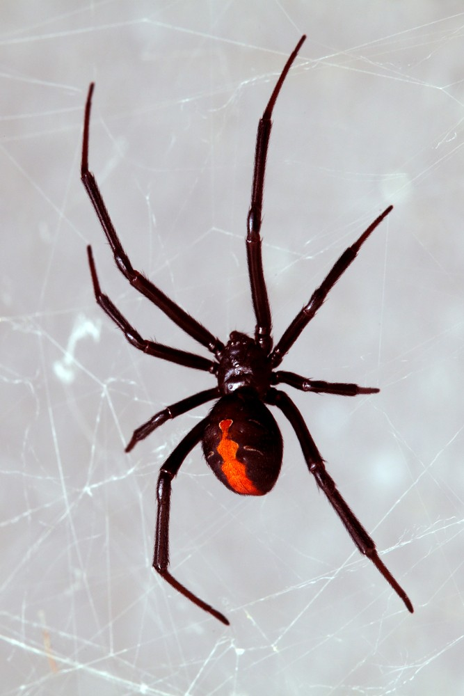
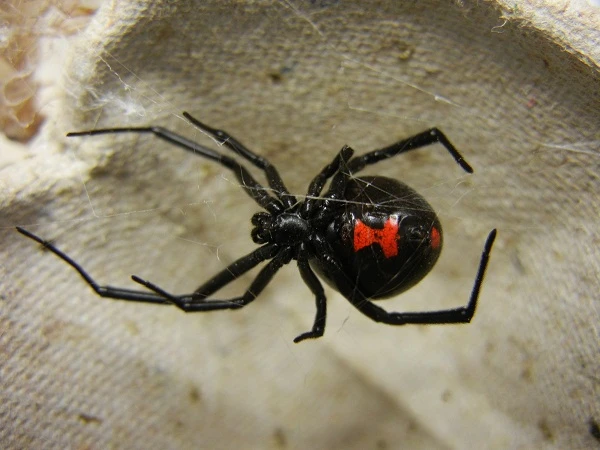

Aranha Viúva-Negra
A aranha viúva-negra se trata de um gênero Latrodectus, da família Theridiidae. Como adaptação evolutiva as viúvas negras possuem pés penteados, a aranha usa esses pés para prender e enrolar suas presas em suas teias, essa seda é espalhada pelo corpo da vítima para preservá-la até que a viúva negra esteja apta para comê-la.
Onde habitam?
Abordando o ambiente em que habitam, essas aranhas são nativas da américa do norte, porém pode ser encontrado em diversas outras regiões do mundo, no Brasil podemos encontrar uma maior concentração dessas aranhas na região nordeste. As Viúvas-Negras geralmente se alimentam dos insetos que ficam presos em suas teias, porém com a falta de alimentos ela pode vir a se alimentar de outros membros da espécie. A digestão dessas aranhas é extracorpórea.
Eliminação das excretas
A eliminação das excretas das viúvas negras se trata de glândulas coxais, sendo excretado guanina e o ácido úrico que evita o desperdício de água. As aranhas por meio de suas patas articuladas se locomovem em ambiente terrestre. As viúvas negras como mecanismo de defesa possuem um veneno que age diretamente no sistema nervoso, além de desenvolver náuseas, dores, espasmos musculares e alterações cardio-respiratórias.
Sistema respiratório
Sanando o sistema respiratório deste animal é possível concluir que por estar inserido em um ambiente terrestre, ela possui um sistema de respiração traqueal, ou seja, com dutos dispersão por todo corpo para possibilitar a respiração, porém ela também possui um órgão filotraqueal que desempenha a função de um pulmão. O sistema circulatório desta aranha é aberto, o coração está localizado no abdômen, bombeando sangue para todas as partes do corpo. O sangue deste animal é composto por hemocianina.
Sistema nervoso
O sistema nervoso das viúvas negras é baseado em gânglios cerebrais, os nervos seguem o opistosoma central e se adentram sobre todo o corpo da aranha.

